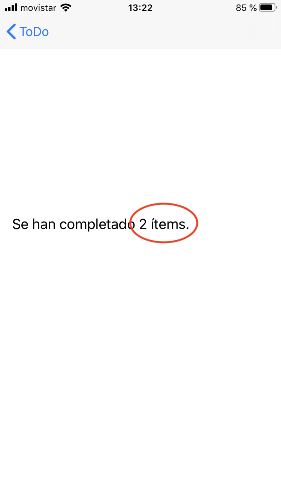

Práctica 4: iCloud y CloudKit¶
Seguimos trabajando con el proyecto ToDo y el bundle ID
es.ua.mastermoviles.ToDo y el perfil de aprovisionamiento Master
Moviles ToDo (está actualizado e incluye el permiso de acceso
a CloudKit y al contenedor iCloud.es.ua.mastermoviles.ToDo).
1. Antes de empezar la clase presencial¶
-
Antes de la clase presencial deberás mirar los dos vídeos con demostraciones que podrás encontrar en Moodle, en la sesión 4. Son muy útiles para entender los conceptos que se explican en más profundidad en teoría y para explicar las prácticas que hay que hacer en este tema.
-
Lee los apartados de teoría para entender el funcionamiento de iCloud clave-valor y los aspectos básicos de CloudKit.
2. Parte obligatoria (hasta 7 puntos)¶
- Actualiza en Xcode el permiso para utilizar iCloud, con clave-valor y con CloudKit.
- Modifica la app ToDo para que el número de ítems terminados se guarde en iCloud del usuario, usando iCloud clave-valor.

-
Añade el código necesario para que las tareas pendientes se guarden y recuperen de la base de datos privada de CloudKit.
En el contenedor de CloudKit se ha añadido el tipo de registro
Tareacon el camponombrecon los índicesQueryable,Searchable,Sortable.
Pista para actualizar la tabla¶
- Los callbacks en los que se reciben los resultados de las queries son asíncronos y se procesan en hilos secundarios.
- Si actualizamos los datos de la tabla en un callback de este tipo, la interfaz de usuario no se refrescará hasta que el usuario no interactúe con la tabla.
- Se puede forzar a ejecutar la actualización de los datos de la tabla en
el hijo principal con este código en algún lugar del
ToDoTableViewController:
DispatchQueue.main.async( execute: {
self.tableView.reloadData()
})
3. Parte opcional (3 puntos)¶
-
Utiliza la base de datos pública de CloudKit para publicar tareas compartidas por todos los usuarios de la app. Al añadir una tarea debes permitir la opción de hacerlo en la base de datos pública. Muestra el texto de las tareas públicas en un color diferente en el listado de tareas.
-
Añade una funcionalidad en la que se recargue la tabla con los datos de iCloud cuando se tire de la tabla hacia abajo.
4. Entrega¶
Entrega una carpeta comprimida con el proyecto y un pequeño documento PDF en el que expliques las funcionalidades implementadas.
Si el tamaño de la entrega supera los 20MB, sube la entrega a Google Drive o similar e incluye un enlace.